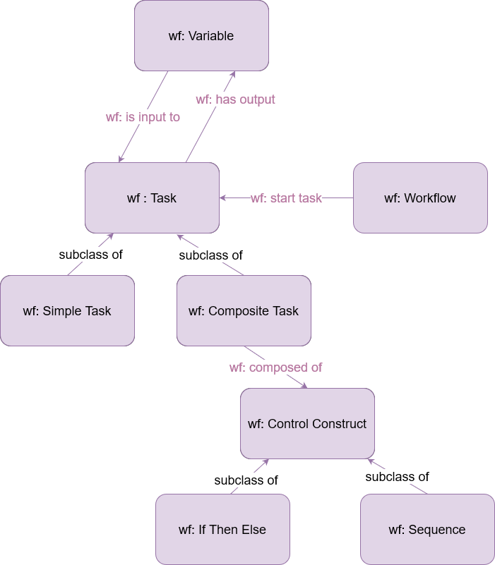

The Workflow Ontology
- Latest version:
- https://www.w3id.org/iSeeOnto/workflow
- Contributors:
- Anjana Wijekoon
- Chamath Palihawadana
- David Corsar
- Ikechukwu Nkisi-Orji
- Juan A. Recio-Garcia
- Marta Caro Martínez
- Imported Ontologies:
- explanationPattern.owl
- sio.owl
- cpannotationschema.owl
- prov-o#
- explainer
- eo
- Download serialization:


- License:

- Cite as:
- The Workflow Ontology.
Abstract
The Workflow Ontology is an ontology provides a high-level description of how an Explainer can be integrated with an eo:AI Method, to generate an ex:Explanation provided to, and evaluated by a eo:User. The representation itself is influenced those of Recio-García (2007) and Garijo (2012) to provide the starting point, which will be extended with more specific types of Tasks (e.g., choice, repeat-while, repeat-until) and parameters (e.g., for describing the passing of parameters for web service calls or programming language - Java, Python, Javascript, etc.), method calls and parameter exchange as required by the use cases. This representation is influenced by those described by: Recio-García, J., Díaz-Agudo, B., and González-Calero, P. (2009). Semantic templates for case-based reasoning systems. The Knowledge Engineering Review, 24(3), 245-264. doi:10.1017/S0269888909990051; and Garijo D, Gil Y. Augmenting PROV with Plans in P-PLAN: Scientific Processes as Linked Data. Linked Science 2012 - Tackling Big Data workshop ISWC 2012. This ontology was created as part of the iSee project (https://isee4xai.com) which received funding from EPSRC under the grant number EP/V061755/1. iSee is part of the CHIST-ERA pathfinder programme for European coordinated research on future and emerging information and communication technologies.Introduction back to ToC
This is a place holder text for the introduction. The introduction should briefly describe the ontology, its motivation, state of the art and goals.Namespace declarations
| wf | <https://www.w3id.org/iSeeOnto/workflow> |
| owl | <http://www.w3.org/2002/07/owl> |
| rdf | <http://www.w3.org/1999/02/22-rdf-syntax-ns> |
| terms | <http://purl.org/dc/terms> |
| xml | <http://www.w3.org/XML/1998/namespace> |
| xsd | <http://www.w3.org/2001/XMLSchema> |
| rdfs | <http://www.w3.org/2000/01/rdf-schema> |
| vann | <http://purl.org/vocab/vann> |
| wf | <http://www.w3id.org/iSeeOnto/workflow> |
The Workflow Ontology: Overview back to ToC
This ontology has the following classes and properties.Classes
Object Properties
The Workflow Ontology: Description back to ToC
Cross reference for The Workflow Ontology classes, properties and dataproperties back to ToC
This section provides details for each class and property defined by The Workflow Ontology.Classes
Composite Taskc back to ToC or Class ToC
IRI: http://www.w3id.org/iSeeOnto/workflow#CompositeTask
- has super-classes
- Task c
Control Constructc back to ToC or Class ToC
IRI: http://www.w3id.org/iSeeOnto/workflow#ControlConstruct
- has sub-classes
- If Then Else c, Sequence c
If Then Elsec back to ToC or Class ToC
IRI: http://www.w3id.org/iSeeOnto/workflow#IfTheElse
- has super-classes
- Control Construct c
Sequencec back to ToC or Class ToC
IRI: http://www.w3id.org/iSeeOnto/workflow#Sequence
- has super-classes
- Control Construct c
Simple Taskc back to ToC or Class ToC
IRI: http://www.w3id.org/iSeeOnto/workflow#SimpleTask
- has super-classes
- Task c
Taskc back to ToC or Class ToC
IRI: http://www.w3id.org/iSeeOnto/workflow#Task
- has super-classes
- has sub-classes
- Composite Task c, Simple Task c
Variablec back to ToC or Class ToC
IRI: http://www.w3id.org/iSeeOnto/workflow#Variable
- has super-classes
Workflowc back to ToC or Class ToC
IRI: http://www.w3id.org/iSeeOnto/workflow#Workflow
- has super-classes
Object Properties
composed ofop back to ToC or Object Property ToC
IRI: http://www.w3id.org/iSeeOnto/workflow#composedOf
has outputop back to ToC or Object Property ToC
IRI: http://www.w3id.org/iSeeOnto/workflow#hasOutput
is input toop back to ToC or Object Property ToC
IRI: http://www.w3id.org/iSeeOnto/workflow#isInputTo
start taskop back to ToC or Object Property ToC
IRI: http://www.w3id.org/iSeeOnto/workflow#startTask
Legend back to ToC
op: Object Properties
dp: Data Properties
ni: Named Individuals
References back to ToC
Add your references here. It is recommended to have them as a list.Acknowledgments back to ToC
The authors would like to thank Silvio Peroni for developing LODE, a Live OWL Documentation Environment, which is used for representing the Cross Referencing Section of this document and Daniel Garijo for developing Widoco, the program used to create the template used in this documentation.